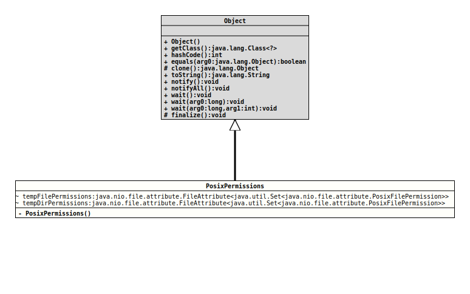

Module org.tquadrat.foundation.util
Package org.tquadrat.foundation.util
Class IOUtils.PosixPermissions
java.lang.Object
org.tquadrat.foundation.util.IOUtils.PosixPermissions
- Enclosing class:
- IOUtils
@ClassVersion(sourceVersion="$Id: IOUtils.java 966 2022-01-04 22:28:49Z tquadrat $")
@UtilityClass
private static final class IOUtils.PosixPermissions
extends Object
The default file attributes.
- Author:
- Thomas Thrien (thomas.thrien@tquadrat.org)
- Version:
- $Id: IOUtils.java 966 2022-01-04 22:28:49Z tquadrat $
- Since:
- 0.0.6
- UML Diagram
-

UML Diagram for "org.tquadrat.foundation.util.IOUtils.PosixPermissions"
{kind=link}
-
Field Summary
FieldsModifier and TypeFieldDescription(package private) static final FileAttribute<Set<PosixFilePermission>>The default attributes for a temporary folder.(package private) static final FileAttribute<Set<PosixFilePermission>>The default attributes for a temporary file. -
Constructor Summary
Constructors -
Method Summary
-
Field Details
-
tempFilePermissions
@API(status=INTERNAL, since="0.0.6") static final FileAttribute<Set<PosixFilePermission>> tempFilePermissionsThe default attributes for a temporary file.- Since:
- 0.0.6
-
tempDirPermissions
@API(status=INTERNAL, since="0.0.6") static final FileAttribute<Set<PosixFilePermission>> tempDirPermissionsThe default attributes for a temporary folder.- Since:
- 0.0.6
-
-
Constructor Details
-
PosixPermissions
private PosixPermissions()
-